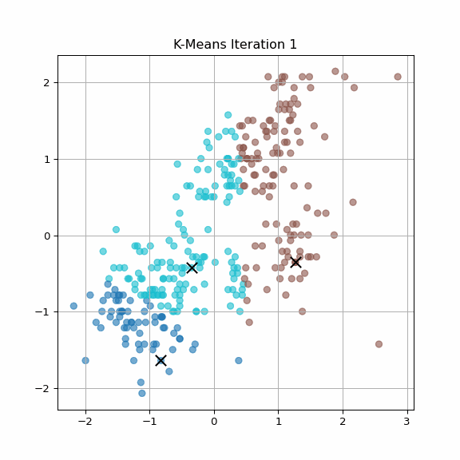
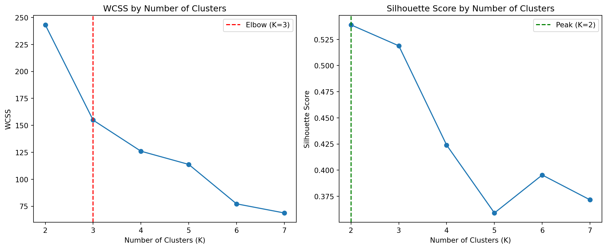
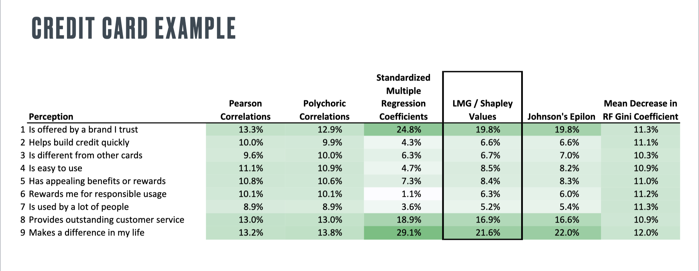

In this blog post, I explore two fundamental tasks in machine learning—unsupervised clustering and supervised driver analysis—using Python and real-world marketing datasets.
The first part focuses on implementing the K-Means algorithm from scratch, applying it to the well-known Palmer Penguins dataset. Through step-by-step visualizations, I illustrate how the algorithm identifies natural groupings based on body measurements, and evaluate the clustering quality using WCSS and silhouette scores.
In the second part, I turn to key driver analysis using a synthetic customer satisfaction dataset. I replicate and expand a benchmark comparison from class that evaluates variable importance using six distinct methods: Pearson correlation, standardized regression coefficients, “usefulness” (change in R²), Shapley values (LMG), Johnson’s relative weights, and Mean Decrease in Gini from a random forest model.
Together, these two analyses reflect both the structure-finding and insight-generating power of machine learning in marketing analytics.
Visualizing K-Means: Clustering Penguins from Scratch
What is K-Means?
K-Means is an unsupervised machine learning algorithm used for discovering clusters in data based on similarity (typically using Euclidean distance). It is widely used in marketing segmentation, image compression, and pattern recognition.
The goal is to partition data into K groups such that data points within each cluster are as close as possible to each other, and as far as possible from points in other clusters.
Mathematical Logic
This section introduces the mathematical foundation of the K-Means clustering algorithm, which is one of the most popular unsupervised learning methods for grouping similar observations. The goal of K-Means is to assign \(n\) observations into \(K\) distinct, non-overlapping clusters based on feature similarity, in such a way that the within-cluster variation is minimized.
Suppose we have \(n\) observations, each represented by a \(p\)-dimensional feature vector \(\mathbf{x}_i \in \mathbb{R}^p\), for \(i = 1, \ldots, n\). We want to partition the observations into \(K\) clusters, denoted as \(C_1, \ldots, C_K\), such that:
Every observation belongs to exactly one cluster: \(\bigcup_{k=1}^K C_k = \{1, \ldots, n\}\)
No overlap between clusters: \(C_k \cap C_{k'} = \emptyset\) for all \(k \ne k'\)
The objective of K-Means is to minimize the total within-cluster sum of squared Euclidean distances, defined as:
where: - \(C_k\) is the set of indices for points assigned to cluster \(k\) - \(\boldsymbol{\mu}_k\) is the centroid (mean vector) of cluster \(k\), computed as:
Repeat Steps 2–3 until cluster assignments no longer change (convergence).
Notes on Optimization
The K-Means algorithm is not guaranteed to find the global minimum of the WCSS, because the optimization is non-convex and depends on initialization.
A common practical strategy is to run the algorithm multiple times with different initializations and choose the best solution (lowest WCSS).
Cluster labels are arbitrary: permuting the label numbers does not change the structure.
Why Use Euclidean Distance?
In standard K-Means, the measure of similarity is Euclidean distance. That’s why it’s important to standardize the features before clustering (especially when variables are on different scales), so that no single variable dominates the distance metric.
Visualizing the K-Means Algorithm Step-by-Step
To better understand how the K-Means algorithm learns and adjusts cluster boundaries, I created an animation that visualizes each iteration of the algorithm applied to the penguins dataset.
The algorithm works by repeating two simple steps:
Assignment: Each point is assigned to the nearest centroid.
Update: Each centroid is recalculated as the mean of the points assigned to it.
This process continues until the centroids stop moving significantly—i.e., the algorithm converges.
The animation below illustrates this iterative process using bill_length_mm and flipper_length_mm as features, with \(K = 3\) clusters. Each frame represents one iteration. Data points are colored by cluster assignment, and the black “×” marks indicate the current centroid positions.

Custom vs. Built-in K-Means: A Side-by-Side Comparison
To evaluate the correctness and effectiveness of the custom K-Means algorithm I implemented, I compare its performance against the built-in KMeans implementation from the scikit-learn library. Specifically, I use \(K = 3\) clusters and assess the clustering results using two metrics: Within-Cluster Sum of Squares (WCSS) and Silhouette Score.
Code
import pandas as pdfrom sklearn.preprocessing import StandardScalerpenguins = pd.read_csv("../data/palmer_penguins.csv").dropna()penguins.head()
species
island
bill_length_mm
bill_depth_mm
flipper_length_mm
body_mass_g
sex
year
0
Adelie
Torgersen
39.1
18.7
181
3750
male
2007
1
Adelie
Torgersen
39.5
17.4
186
3800
female
2007
2
Adelie
Torgersen
40.3
18.0
195
3250
female
2007
3
Adelie
Torgersen
36.7
19.3
193
3450
female
2007
4
Adelie
Torgersen
39.3
20.6
190
3650
male
2007
Code
X = penguins[["bill_length_mm", "flipper_length_mm"]].valuesscaler = StandardScaler()X_scaled = scaler.fit_transform(X)
Here is the self-written function for K-Means, which initializes centroids randomly and iteratively updates them until convergence. The logic matches the standard K-Means algorithm discussed above.
To visually compare the clustering results, the plots below show the cluster assignments produced by the custom K-Means implementation (left) and the built-in scikit-learn implementation (right). In both cases:
Points are colored by their assigned cluster.
Centroids are marked with black diamonds (custom) and red diamonds (built-in).
The plots confirm that both methods yield identical clustering structures, with near-perfect agreement in cluster boundaries and centroid positions.
The comparison shows that the custom implementation of the K-Means algorithm produces results that are nearly identical to those of the built-in KMeans from scikit-learn.
The WCSS values match exactly, indicating that the overall compactness of the clusters is the same.
The Silhouette Scores are also identical, suggesting both methods achieve the same balance of intra-cluster cohesion and inter-cluster separation.
This confirms that the logic in the custom implementation is consistent with the standard approach, validating both the clustering assignments and the centroid updates.
Determining the Optimal Number of Clusters (K)
Choosing the right number of clusters is a key decision in K-Means clustering. To determine the optimal \(K\), we evaluate clustering performance across different values of \(K\) using:
WCSS: A lower WCSS indicates more compact clusters, but it always decreases with higher \(K\).
Silhouette Score: Balances cohesion and separation, with values closer to 1 indicating better-defined clusters.
We test \(K = 2\) to \(K = 7\) and plot both metrics to look for the “elbow” in the WCSS curve and the peak in the silhouette scores.
Code
k_values =range(2, 8)wcss_list = []silhouette_list = []for k in k_values: labels_k, _ = kmeans_custom(X_scaled, k) wcss = compute_wcss(X_scaled, labels_k) sil = silhouette_score(X_scaled, labels_k) wcss_list.append(wcss) silhouette_list.append(sil)import matplotlib.pyplot as pltbest_k_sil = k_values[np.argmax(silhouette_list)]plt.figure(figsize=(12, 5))# WCSSplt.subplot(1, 2, 1)plt.plot(k_values, wcss_list, marker='o')plt.axvline(x=3, color='red', linestyle='--', label='Elbow (K=3)')plt.title("WCSS by Number of Clusters")plt.xlabel("Number of Clusters (K)")plt.ylabel("WCSS")plt.legend()# Silhouetteplt.subplot(1, 2, 2)plt.plot(k_values, silhouette_list, marker='o')plt.axvline(x=best_k_sil, color='green', linestyle='--', label=f'Peak (K={best_k_sil})')plt.title("Silhouette Score by Number of Clusters")plt.xlabel("Number of Clusters (K)")plt.ylabel("Silhouette Score")plt.legend()plt.tight_layout()plt.show()

In the silhouette plot, we mark the true peak at \(K=2\), where the score is highest. While this suggests that the data naturally splits into two well-separated clusters, the WCSS plot shows an elbow at \(K=3\), which offers a better balance between complexity and explanatory power.
Both metrics are helpful, but may suggest different optimal values depending on what aspect of clustering is prioritized.
Uncovering What Drives Outcomes: A Multimethod Feature Importance Analysis
In this section, I use supervised machine learning methods to identify which variables are most important in explaining a target outcome.
Following the framework introduced in Session 5, I compare six different variable importance measures: Pearson correlation, standardized regression coefficients, usefulness (\(\Delta R^2\)), Shapley values, Johnson’s relative weights, and mean decrease in Gini from a random forest model.
This analysis helps uncover which features consistently drive the outcome across different model perspectives.
Introduction and Dataset Overview
We begin by loading the dataset and inspecting its structure. Our goal is to identify the response variable and the candidate predictors to be used in the driver analysis.
The dataset includes many perceptual variables, as well as identifiers like id and brand.
Following the variable importance comparison shown in the class example (Session 5, Slide 75), I focus on the perception-based features only, excluding ID and brand metadata.

Statistical Feature Importance Methods
I begin by calculating three regression-based importance metrics:
Pearson correlation measures the raw linear association between each predictor and satisfaction.
Standardized regression coefficients come from fitting a linear model on standardized data and show the relative impact per standard deviation change.
Usefulness quantifies the drop in \(R^2\) when each variable is removed from a full linear model.
Note: The values in the table below differ from those shown above. This is expected, as I use a different (synthetic) dataset and Python-based implementations. The goal here is to replicate the analysis process, not to match specific numbers.
Model-Based Variable Importance
In this section, I estimate variable importance using three model-driven approaches:
Random Forest Gini importance: Reflects how much each variable reduces impurity in tree-based models.
SHAP values: A Shapley-inspired method that attributes contribution of each variable to model predictions.
Johnson’s relative weights: A decomposition of model \(R^2\) based on the orthogonal projection of predictors (approximated via PCA).
To approximate Johnson’s relative weights without using unstable packages, I use a PCA-based projection method that decomposes variance and reweights predictors based on their contribution to model \(R^2\).
This gives us a stable and interpretable measure of relative variable importance, conceptually aligned with the Shapley-based decomposition.
Together, these three approaches reflect how variables contribute to prediction in nonlinear, interactive, and multicollinear contexts.
Note: The values in the table below differ from those shown above. This is expected, as I use a different (synthetic) dataset and Python-based implementations. The goal here is to replicate the analysis process, not to match specific numbers.
Summary Table of Results
To wrap up the analysis, I combine all six importance metrics into a single summary table. These metrics span both traditional statistical and modern model-based approaches, offering different perspectives on what drives customer satisfaction.
The six methods include:
Pearson correlation
Standardized regression coefficient
Usefulness (\(\Delta R^2\))
Random Forest Gini importance
SHAP value (mean absolute contribution)
Johnson’s relative weights
By viewing all metrics side-by-side, we can identify variables that consistently rank highly and those that are more model-sensitive.
Across all six methods, impact, trust, and service consistently rank as the top drivers of satisfaction. These variables score highly not only in correlation-based methods but also in model-driven measures like SHAP and Gini importance.
Other features such as popular, appealing, and easy show more variation in their rankings depending on the method used—highlighting how different models capture different aspects of influence.
The combined analysis confirms a small set of robust predictors, while also revealing that feature importance can be sensitive to the assumptions and structure of the chosen method.
Extended Comparison with Advanced Models
To complement the earlier methods, I explore additional model-based techniques for estimating feature importance. These include:
XGBoost: A gradient-boosted tree ensemble model that outputs multiple importance metrics, such as gain and cover.
Multilayer Perceptron (MLP): A fully connected neural network, for which we calculate permutation-based importance to assess how sensitive the model is to each input feature.
These advanced models provide robustness checks and capture complex non-linear interactions that traditional methods may overlook.
Advanced models further reinforce the role of a few key predictors. In the XGBoost model, trust stands out with the highest gain score, followed by impact and service. These same features are also top-ranked in the MLP model, based on permutation importance.
While there are slight variations in ordering, the consistency across both linear and nonlinear methods—including tree ensembles and neural networks—underscores the robustness of these drivers in explaining satisfaction.
Across all eight importance metrics—from classical correlation to modern machine learning techniques—trust and impact consistently emerge as the most influential predictors of customer satisfaction. These two variables dominate not only in statistical methods (e.g., Pearson correlation, standardized coefficients) but also in model-driven metrics like SHAP, Gini importance, and XGBoost gain.
Service also ranks highly in several methods, further supporting its role as a key driver. Meanwhile, features such as differs, rewarding, and popular receive little to no importance across nearly all methods, suggesting minimal predictive value in this context.
Notably, the heatmap also reveals areas of model sensitivity. For instance, rewarding scores very low in most methods but peaks under Johnson’s relative weights—highlighting how different models capture different aspects of importance.
Overall, the triangulation of insights across diverse methods reinforces confidence in the top features while also providing transparency around model-specific variance. This multi-method approach not only strengthens interpretability but also increases robustness in actionable recommendations.
Source Code
---title: "Unsupervised and Supervised Machine Learning: From K-Means to Key Drivers"author: "Miya Huang"date: todaycallout-appearance: minimal # this hides the blue "i" icon on .callout-notesformat: html: code-fold: true code-tools: true math: mathjaxjupyter: python3---In this blog post, I explore two fundamental tasks in machine learning—**unsupervised clustering** and **supervised driver analysis**—using Python and real-world marketing datasets. The first part focuses on implementing the K-Means algorithm from scratch, applying it to the well-known Palmer Penguins dataset. Through step-by-step visualizations, I illustrate how the algorithm identifies natural groupings based on body measurements, and evaluate the clustering quality using WCSS and silhouette scores.In the second part, I turn to key driver analysis using a synthetic customer satisfaction dataset. I replicate and expand a benchmark comparison from class that evaluates variable importance using six distinct methods: Pearson correlation, standardized regression coefficients, "usefulness" (change in R²), Shapley values (LMG), Johnson's relative weights, and Mean Decrease in Gini from a random forest model.Together, these two analyses reflect both the structure-finding and insight-generating power of machine learning in marketing analytics.## Visualizing K-Means: Clustering Penguins from Scratch### What is K-Means?K-Means is an unsupervised machine learning algorithm used for discovering clusters in data based on similarity (typically using Euclidean distance). It is widely used in marketing segmentation, image compression, and pattern recognition.The goal is to partition data into K groups such that data points within each cluster are as close as possible to each other, and as far as possible from points in other clusters.### Mathematical LogicThis section introduces the mathematical foundation of the K-Means clustering algorithm, which is one of the most popular unsupervised learning methods for grouping similar observations. The goal of K-Means is to assign $n$ observations into $K$ distinct, non-overlapping clusters based on feature similarity, in such a way that the within-cluster variation is minimized.Suppose we have $n$ observations, each represented by a $p$-dimensional feature vector $\mathbf{x}_i \in \mathbb{R}^p$, for $i = 1, \ldots, n$. We want to partition the observations into $K$ clusters, denoted as $C_1, \ldots, C_K$, such that:- Every observation belongs to exactly one cluster: $\bigcup_{k=1}^K C_k = \{1, \ldots, n\}$- No overlap between clusters: $C_k \cap C_{k'} = \emptyset$ for all $k \ne k'$The objective of K-Means is to minimize the total within-cluster sum of squared Euclidean distances, defined as:$$\text{WCSS} = \sum_{k=1}^K \sum_{i \in C_k} \| \mathbf{x}_i - \boldsymbol{\mu}_k \|^2$$where:- $C_k$ is the set of indices for points assigned to cluster $k$- $\boldsymbol{\mu}_k$ is the centroid (mean vector) of cluster $k$, computed as:$$\boldsymbol{\mu}_k = \frac{1}{|C_k|} \sum_{i \in C_k} \mathbf{x}_i$$In words, the WCSS measures how tightly grouped the points in each cluster are around their respective cluster centers.#### K-Means Algorithm (Iterative Optimization)K-Means uses a simple iterative algorithm to find a local minimum of the WCSS objective:1. **Initialize**: Randomly select $K$ observations as initial cluster centroids $\boldsymbol{\mu}_1, \ldots, \boldsymbol{\mu}_K$.2. **Assign Step**: For each observation $\mathbf{x}_i$, assign it to the nearest cluster centroid using Euclidean distance:$$\text{Cluster}(\mathbf{x}_i) = \arg\min_{k \in \{1, \ldots, K\}} \| \mathbf{x}_i - \boldsymbol{\mu}_k \|^2$$3. **Update Step**: For each cluster $k$, recompute its centroid as the mean of all points currently assigned to it:$$\boldsymbol{\mu}_k^{\text{new}} = \frac{1}{|C_k|} \sum_{\mathbf{x}_i \in C_k} \mathbf{x}_i$$4. **Repeat** Steps 2–3 until cluster assignments no longer change (convergence).#### Notes on Optimization- The K-Means algorithm is not guaranteed to find the global minimum of the WCSS, because the optimization is non-convex and depends on initialization.- A common practical strategy is to run the algorithm multiple times with different initializations and choose the best solution (lowest WCSS).- Cluster labels are arbitrary: permuting the label numbers does not change the structure.#### Why Use Euclidean Distance?In standard K-Means, the measure of similarity is Euclidean distance. That’s why it's important to standardize the features before clustering (especially when variables are on different scales), so that no single variable dominates the distance metric.### Visualizing the K-Means Algorithm Step-by-StepTo better understand how the K-Means algorithm learns and adjusts cluster boundaries, I created an animation that visualizes each iteration of the algorithm applied to the penguins dataset.The algorithm works by repeating two simple steps:1. **Assignment**: Each point is assigned to the nearest centroid.2. **Update**: Each centroid is recalculated as the mean of the points assigned to it.This process continues until the centroids stop moving significantly—i.e., the algorithm converges.The animation below illustrates this iterative process using `bill_length_mm` and `flipper_length_mm` as features, with $K = 3$ clusters. Each frame represents one iteration. Data points are colored by cluster assignment, and the black "×" marks indicate the current centroid positions.### Custom vs. Built-in K-Means: A Side-by-Side ComparisonTo evaluate the correctness and effectiveness of the custom K-Means algorithm I implemented, I compare its performance against the built-in `KMeans` implementation from the `scikit-learn` library. Specifically, I use $K = 3$ clusters and assess the clustering results using two metrics: **Within-Cluster Sum of Squares (WCSS)** and **Silhouette Score**.```{python}import pandas as pdfrom sklearn.preprocessing import StandardScalerpenguins = pd.read_csv("../data/palmer_penguins.csv").dropna()penguins.head()``````{python}X = penguins[["bill_length_mm", "flipper_length_mm"]].valuesscaler = StandardScaler()X_scaled = scaler.fit_transform(X)```Here is the self-written function for K-Means, which initializes centroids randomly and iteratively updates them until convergence. The logic matches the standard K-Means algorithm discussed above.```{python}import numpy as npdef kmeans_custom(X, k, max_iter=100): n_samples, n_features = X.shape np.random.seed(42) centroids = X[np.random.choice(n_samples, k, replace=False)]for _ inrange(max_iter): distances = np.linalg.norm(X[:, np.newaxis] - centroids, axis=2) labels = np.argmin(distances, axis=1) new_centroids = np.array([X[labels == i].mean(axis=0) for i inrange(k)])if np.allclose(centroids, new_centroids):break centroids = new_centroidsreturn labels, centroids```We now apply both the custom implementation and the built-in `KMeans` from scikit-learn to the same standardized dataset, using 3 clusters.```{python}from sklearn.cluster import KMeanskmeans_sklearn = KMeans(n_clusters=3, n_init=10, random_state=42)labels_builtin = kmeans_sklearn.fit_predict(X_scaled)centroids_builtin = kmeans_sklearn.cluster_centers_labels_custom, centroids_custom = kmeans_custom(X_scaled, k=3)```To visually compare the clustering results, the plots below show the cluster assignments produced by the custom K-Means implementation (left) and the built-in `scikit-learn` implementation (right). In both cases:- Points are colored by their assigned cluster.- Centroids are marked with black diamonds (custom) and red diamonds (built-in).The plots confirm that both methods yield identical clustering structures, with near-perfect agreement in cluster boundaries and centroid positions.```{python}import matplotlib.pyplot as pltfig, axes = plt.subplots(1, 2, figsize=(12, 5), sharex=True, sharey=True)axes[0].scatter(X_scaled[:, 0], X_scaled[:, 1], c=labels_custom, cmap='Accent', alpha=0.6)axes[0].scatter(*centroids_custom.T, color='black', marker='D', s=100, label='Centroid')axes[0].set_title("Custom K-Means Clustering")axes[0].legend()axes[1].scatter(X_scaled[:, 0], X_scaled[:, 1], c=labels_builtin, cmap='Accent', alpha=0.6)axes[1].scatter(*centroids_builtin.T, color='red', marker='D', s=100, label='Centroid')axes[1].set_title("scikit-learn KMeans Clustering")axes[1].legend()for ax in axes: ax.set_xlabel("Scaled Bill Length") ax.set_ylabel("Scaled Flipper Length") ax.grid(True)plt.tight_layout()plt.show()```We use two metrics to compare the quality of clustering:- **WCSS**: Measures how compact the clusters are.- **Silhouette Score**: Combines cohesion and separation; higher is better.```{python}from sklearn.metrics import silhouette_scoredef compute_wcss(X, labels):returnsum(np.linalg.norm(X[labels == i] - X[labels == i].mean(axis=0))**2for i in np.unique(labels))wcss_custom = compute_wcss(X_scaled, labels_custom)sil_custom = silhouette_score(X_scaled, labels_custom)wcss_builtin = kmeans_sklearn.inertia_sil_builtin = silhouette_score(X_scaled, labels_builtin)print("Comparison of Custom vs. Built-in KMeans (K=3)")print(f"Custom KMeans → WCSS: {wcss_custom:.2f}, Silhouette: {sil_custom:.4f}")print(f"Built-in KMeans → WCSS: {wcss_builtin:.2f}, Silhouette: {sil_builtin:.4f}")```The comparison shows that the custom implementation of the K-Means algorithm produces results that are nearly identical to those of the built-in `KMeans` from `scikit-learn`.- The **WCSS** values match exactly, indicating that the overall compactness of the clusters is the same.- The **Silhouette Scores** are also identical, suggesting both methods achieve the same balance of intra-cluster cohesion and inter-cluster separation.This confirms that the logic in the custom implementation is consistent with the standard approach, validating both the clustering assignments and the centroid updates.### Determining the Optimal Number of Clusters (K)Choosing the right number of clusters is a key decision in K-Means clustering. To determine the optimal $K$, we evaluate clustering performance across different values of $K$ using:- **WCSS**: A lower WCSS indicates more compact clusters, but it always decreases with higher $K$.- **Silhouette Score**: Balances cohesion and separation, with values closer to 1 indicating better-defined clusters.We test $K = 2$ to $K = 7$ and plot both metrics to look for the "elbow" in the WCSS curve and the peak in the silhouette scores.```{python}k_values =range(2, 8)wcss_list = []silhouette_list = []for k in k_values: labels_k, _ = kmeans_custom(X_scaled, k) wcss = compute_wcss(X_scaled, labels_k) sil = silhouette_score(X_scaled, labels_k) wcss_list.append(wcss) silhouette_list.append(sil)import matplotlib.pyplot as pltbest_k_sil = k_values[np.argmax(silhouette_list)]plt.figure(figsize=(12, 5))# WCSSplt.subplot(1, 2, 1)plt.plot(k_values, wcss_list, marker='o')plt.axvline(x=3, color='red', linestyle='--', label='Elbow (K=3)')plt.title("WCSS by Number of Clusters")plt.xlabel("Number of Clusters (K)")plt.ylabel("WCSS")plt.legend()# Silhouetteplt.subplot(1, 2, 2)plt.plot(k_values, silhouette_list, marker='o')plt.axvline(x=best_k_sil, color='green', linestyle='--', label=f'Peak (K={best_k_sil})')plt.title("Silhouette Score by Number of Clusters")plt.xlabel("Number of Clusters (K)")plt.ylabel("Silhouette Score")plt.legend()plt.tight_layout()plt.show()```In the silhouette plot, we mark the true peak at $K=2$, where the score is highest. While this suggests that the data naturally splits into two well-separated clusters, the WCSS plot shows an elbow at $K=3$, which offers a better balance between complexity and explanatory power.Both metrics are helpful, but may suggest different optimal values depending on what aspect of clustering is prioritized.## Uncovering What Drives Outcomes: A Multimethod Feature Importance AnalysisIn this section, I use supervised machine learning methods to identify which variables are most important in explaining a target outcome. Following the framework introduced in Session 5, I compare six different variable importance measures: Pearson correlation, standardized regression coefficients, usefulness ($\Delta R^2$), Shapley values, Johnson's relative weights, and mean decrease in Gini from a random forest model.This analysis helps uncover which features consistently drive the outcome across different model perspectives.### Introduction and Dataset OverviewWe begin by loading the dataset and inspecting its structure. Our goal is to identify the response variable and the candidate predictors to be used in the driver analysis.```{python}df = pd.read_csv("../data/data_for_drivers_analysis.csv")df.describe()```The dataset includes many perceptual variables, as well as identifiers like `id` and `brand`. Following the variable importance comparison shown in the class example (Session 5, Slide 75), I focus on the perception-based features only, excluding ID and brand metadata.### Statistical Feature Importance MethodsI begin by calculating three regression-based importance metrics:- **Pearson correlation** measures the raw linear association between each predictor and satisfaction.- **Standardized regression coefficients** come from fitting a linear model on standardized data and show the relative impact per standard deviation change.- **Usefulness** quantifies the drop in $R^2$ when each variable is removed from a full linear model.```{python}from sklearn.linear_model import LinearRegressionfrom sklearn.metrics import r2_scorey = df["satisfaction"]X = df.drop(columns=["satisfaction", "id", "brand"])# Pearson Correlationcorrelations = X.corrwith(y)# Standardized Coefficientsscaler = StandardScaler()X_scaled = pd.DataFrame(scaler.fit_transform(X), columns=X.columns)y_scaled = (y - y.mean()) / y.std()lr = LinearRegression()lr.fit(X_scaled, y_scaled)standardized_coefs = pd.Series(lr.coef_, index=X.columns)# Usefulness: ΔR² from dropping one variable at a timefull_r2 = r2_score(y, LinearRegression().fit(X, y).predict(X))usefulness = {}for col in X.columns: X_drop = X.drop(columns=[col]) y_pred_drop = LinearRegression().fit(X_drop, y).predict(X_drop) r2_drop = r2_score(y, y_pred_drop) usefulness[col] = full_r2 - r2_dropusefulness = pd.Series(usefulness)```The table below summarizes these results:```{python}summary_df = pd.DataFrame({"Pearson Correlation": correlations,"Standardized Coefficient": standardized_coefs,"Usefulness (ΔR²)": usefulness}).round(3)summary_df.sort_values("Usefulness (ΔR²)", ascending=False)```Note: The values in the table below differ from those shown above. This is expected, as I use a different (synthetic) dataset and Python-based implementations. The goal here is to replicate the analysis process, not to match specific numbers.### Model-Based Variable ImportanceIn this section, I estimate variable importance using three model-driven approaches:- **Random Forest Gini importance**: Reflects how much each variable reduces impurity in tree-based models.- **SHAP values**: A Shapley-inspired method that attributes contribution of each variable to model predictions.- **Johnson’s relative weights**: A decomposition of model $R^2$ based on the orthogonal projection of predictors (approximated via PCA).To approximate Johnson’s relative weights without using unstable packages, I use a PCA-based projection method that decomposes variance and reweights predictors based on their contribution to model $R^2$.This gives us a stable and interpretable measure of relative variable importance, conceptually aligned with the Shapley-based decomposition.Together, these three approaches reflect how variables contribute to prediction in nonlinear, interactive, and multicollinear contexts.```{python}from sklearn.ensemble import RandomForestRegressorfrom sklearn.decomposition import PCAimport shap# Random Forest Ginirf = RandomForestRegressor(n_estimators=500, random_state=42)rf.fit(X, y)gini_importance = pd.Series(rf.feature_importances_, index=X.columns)# SHAPexplainer = shap.Explainer(rf, X)shap_values = explainer(X)shap_importance = pd.Series( np.abs(shap_values.values).mean(axis=0), index=X.columns)# Johnson's Relative Weights (PCA approximation)pca = PCA()Z = pca.fit_transform(X)lr_pca = LinearRegression().fit(Z, y)beta_z = lr_pca.coef_var_z = np.var(Z, axis=0)r2 = lr_pca.score(Z, y)p = X.shape[1]Lambda = (beta_z **2) * var_zraw_weights = np.dot(pca.components_.T **2, Lambda)johnson_weight = raw_weights / raw_weights.sum() * r2johnson_weight = pd.Series(johnson_weight, index=X.columns)```The table below summarizes these results:```{python}model_df = pd.DataFrame({"Gini (RF)": gini_importance,"SHAP (mean abs)": shap_importance,"Johnson Weight": johnson_weight}).round(4).sort_values("SHAP (mean abs)", ascending=False)model_df```Note: The values in the table below differ from those shown above. This is expected, as I use a different (synthetic) dataset and Python-based implementations. The goal here is to replicate the analysis process, not to match specific numbers.### Summary Table of ResultsTo wrap up the analysis, I combine all six importance metrics into a single summary table. These metrics span both traditional statistical and modern model-based approaches, offering different perspectives on what drives customer satisfaction.The six methods include:- **Pearson correlation**- **Standardized regression coefficient**- **Usefulness ($\Delta R^2$)**- **Random Forest Gini importance**- **SHAP value (mean absolute contribution)**- **Johnson’s relative weights**By viewing all metrics side-by-side, we can identify variables that consistently rank highly and those that are more model-sensitive.```{python}full_df = pd.concat([summary_df, model_df], axis=1).round(3)full_df = full_df.sort_values("SHAP (mean abs)", ascending=False)full_df``````{python}top_vars = full_df.sort_values("SHAP (mean abs)", ascending=False).head(6)methods_to_plot = ["Pearson Correlation","Standardized Coefficient","Usefulness (ΔR²)","Gini (RF)","SHAP (mean abs)","Johnson Weight"]top_vars[methods_to_plot].plot(kind='bar', figsize=(10, 6))plt.title("Variable Importance Across Methods (Top 6 Variables)")plt.ylabel("Importance Score")plt.xlabel("Variable")plt.xticks(rotation=45)plt.legend(loc="upper right", fontsize=8)plt.tight_layout()plt.show()```Across all six methods, `impact`, `trust`, and `service` consistently rank as the top drivers of satisfaction. These variables score highly not only in correlation-based methods but also in model-driven measures like SHAP and Gini importance.Other features such as `popular`, `appealing`, and `easy` show more variation in their rankings depending on the method used—highlighting how different models capture different aspects of influence.The combined analysis confirms a small set of robust predictors, while also revealing that feature importance can be sensitive to the assumptions and structure of the chosen method.### Extended Comparison with Advanced ModelsTo complement the earlier methods, I explore additional model-based techniques for estimating feature importance. These include:- **XGBoost**: A gradient-boosted tree ensemble model that outputs multiple importance metrics, such as gain and cover.- **Multilayer Perceptron (MLP)**: A fully connected neural network, for which we calculate permutation-based importance to assess how sensitive the model is to each input feature.These advanced models provide robustness checks and capture complex non-linear interactions that traditional methods may overlook.```{python}import xgboost as xgbfrom sklearn.neural_network import MLPRegressorfrom sklearn.inspection import permutation_importancexgb_model = xgb.XGBRegressor(n_estimators=500, random_state=42)xgb_model.fit(X, y)xgb_importance = pd.Series(xgb_model.feature_importances_, index=X.columns)xgb_importance_df = xgb_importance.sort_values(ascending=False).to_frame("XGBoost Gain")mlp = MLPRegressor(hidden_layer_sizes=(100,), max_iter=1000, random_state=42)mlp.fit(X, y)perm = permutation_importance(mlp, X, y, n_repeats=10, random_state=42)mlp_importance = pd.Series(perm.importances_mean, index=X.columns).sort_values(ascending=False)mlp_importance_df = mlp_importance.to_frame("MLP Permutation Importance")```The table below summarizes these results:```{python}advanced_df = pd.concat([xgb_importance_df, mlp_importance_df], axis=1).round(4)advanced_df```Advanced models further reinforce the role of a few key predictors. In the XGBoost model, `trust` stands out with the highest gain score, followed by `impact` and `service`. These same features are also top-ranked in the MLP model, based on permutation importance.While there are slight variations in ordering, the consistency across both linear and nonlinear methods—including tree ensembles and neural networks—underscores the robustness of these drivers in explaining satisfaction.### Conclusion```{python}import seaborn as snsall_metrics_df = pd.concat([summary_df, model_df, advanced_df], axis=1)normalized_df = all_metrics_df.copy()normalized_df = normalized_df.apply(lambda col: (col - col.min()) / (col.max() - col.min()))plt.figure(figsize=(12, 7))sns.heatmap(normalized_df.T, annot=True, cmap="YlGnBu", fmt=".2f", linewidths=0.5)plt.title("Normalized Feature Importance Across 8 Methods")plt.xlabel("Variable")plt.ylabel("Importance Metric")plt.tight_layout()plt.show()```Across all eight importance metrics—from classical correlation to modern machine learning techniques—`trust` and `impact` consistently emerge as the most influential predictors of customer satisfaction. These two variables dominate not only in statistical methods (e.g., Pearson correlation, standardized coefficients) but also in model-driven metrics like SHAP, Gini importance, and XGBoost gain.`Service` also ranks highly in several methods, further supporting its role as a key driver. Meanwhile, features such as `differs`, `rewarding`, and `popular` receive little to no importance across nearly all methods, suggesting minimal predictive value in this context.Notably, the heatmap also reveals areas of model sensitivity. For instance, `rewarding` scores very low in most methods but peaks under Johnson’s relative weights—highlighting how different models capture different aspects of importance.Overall, the triangulation of insights across diverse methods reinforces confidence in the top features while also providing transparency around model-specific variance. This multi-method approach not only strengthens interpretability but also increases robustness in actionable recommendations.